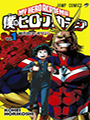
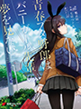
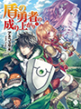

Lista de Mangás
A-Z
Boku dake ga inai machi
Ler Mangá

Satoru Fujinuma, 29 anos e aspirante a mangaká, volta no tempo sempre quando acontece uma tragédia em especial (sequestro / morte): é um fenômeno conhecido como "revival". Certo dia, sua mãe nota e suspeita a presença de um sequestrador - um assassino em série que cometeu crimes contra alguns colegas de infância de Satoru - por ela perceber e ter a mente aguçada, foi assassinada pelo meliante a facadas de forma fria. O incidente despertou o "Revival", fazendo-o regressar 18 anos no tempo. Não apenas para salvar a mãe, como também seus amigos. A história se passa em 2006 e em 1988, quando viaja 18 anos para trás.
Boku no hero
Ler Mangá

Um mundo onde poderes começaram a existir, e as pessoas que os possuem, chamam seus poderes de "individualidade", 80% da população atual possui, os outros 20% são comuns... Como é o caso do jovem Midorya. Midorya quer, desde criancinha, ser um herói, graças ao símbolo da paz, All Might, que ele admira de mais. Por ter nascido normal, entrar na escola de heróis era impossível, porém, algo, um dia, simplesmente acontece, um encontro que muda tudo...
Dr.stone
Ler Mangá
Durante 5 anos, Taiju Ooki tentou se confessar para o amor de sua vida, Yuzuriha, mas nunca conseguiu. Um dia ele decode reunir toda sua coragem para dizer a ela tudo o que sente... Mas EXATAMENTE nessa hora uma CATÁSTROFE de proporções globais extingue toda a humanidade transformando-a em pedra. Como únicos sobreviventes (até então) cabe a Taiju e seu brilhante amigo, o cientista Senkuu, fazerem a humanidade sair da Idade da Pedra, voltar a Era Moderna e salvar Yuzuriha.
Goblin Slayer
Ler Mangá

Em um mundo de fantasia, aventureiros vêm de longe para se juntar a Guilda, a fim de concluir contratos para os postos de trabalho que estão disponíveis. Uma sacerdotisa inexperiente, ingressa em sua primeira aventura, mas se veem em perigo depois que seu primeiro contrato de aventureiros que envolve goblins da errado e quase todo seu grupo é dizimado pelos goblins. Depois que o resto do seu grupo é abatido ela é salva por um homem conhecido como Goblin Slayer, um aventureiro, cujo único propósito é a erradicação dos goblins.
Hitsugi no chaika
Ler Mangá

Toru Acura é um soldado aposentado de 20 anos vagando pela vida agora que a guerra acabou. Ele encontra Chaika Trabant, uma feiticeira de 14 anos de idade, carregando um caixão, e segue-a na esperança de encontrar um significado para a sua vida novamente.
It's My Life
Ler Mangá

O cavaleiro Astra, ex-capitão dos cavaleiros do império, após 10 anos de serviço ao reino, decide se aposentar com a idade 35 anos. Com suas economias ele compra uma casa para morar e viver uma vida tranquila. Entretanto, em seu primeiro dia curtindo sua aposentadoria, uma bruxinha hobbit/elfa-anã chamada Noa acaba colidindo em sua nova residência, e assim perturbando sua paz. Noa diz estar procurando por um Deus do mal, e acaba assumindo que Astra seja quem ela procura. Quem seria o cavaleiro, ex-capitão dos cavaleiros do império, para acabar com os sonhos de uma criancinha? Após perder todas as chances de corrigir esse mal-entendido, Noa o reconhece como mestre, e o “força” a deixá-la ser sua serva. E é assim que a aventura dos dois começa!
Kakegurui
Ler Mangá
Hyakkaou Private Academy é uma escola de elite que garante preparar os filhos das pessoas mais ricas do mundo para a vida real. De dia, ela é como qualquer outra instituição de ensino, mas à noite ela se transforma em uma casa de jogos e é aí que os jovens estudantes aprendem a importância de manipular as pessoas e o poder do dinheiro. Entre os alunos está a novata Yumeko Jabami (Saori Hayami), que diferentes dos outros, joga por diversão.
LO-FI AFTER SCHOOL
Ler Mangá

Contém oito histórias. Cada história possui personagens diferentes, mas o tema do amor e suas diferentes formas de expressão estão presentes. 1. Girlfriend in the Sky 2. Ankoku-san 3. Kamisama Gokko (Kami-sama Make-Believe) 4. Downtown Train 5. Harumage. 6. Ekstasis 7. Ao 8. After School Show.
Mob Psycho 100
Ler Mangá

A história revolve à volta de “Mob”, um rapaz que irá explodiar se a sua capacidade emocional atingir 100%. Este rapaz, com poderes psíquicos, ganhou a sua alcunha, “Mob”, devido ao facto de este não se destacar entre as outras pessoas. He mantém os seus poderes psíquicos “engarrafados”, de modo a poder viver normalmente,mas se o seu nível emocional atinge 100, algo toma controlo de todo o seu corpo.
Noragami
Ler Mangá
Hiyori Iki era uma estudante comum do ensino médio até ser atropelada por um ônibus enquanto tentava salvar a vida de um rapaz de moletom chamado Yato. Esse incidente causou a transformação de Hiyori em meio-fantasma. Em seguida, ela descobre que Yato é na verdade um deus, e ela acaba sendo levada para dentro do mundo dos deuses enquanto tenta se manter no reino dos vivos.
One Punch Man
Ler Mangá

Um homem com apenas um soco, ou seja, ele não precisa dar mais de um soco pra derrotar qualquer inimigo. Este homem é Saitama, um jovem recém-desempregado, que após salvar um garoto de ser morto por um homem caranguejo, resolve se tornar herói. Em sua jornada, Saitama fica tão forte, que derrota os monstros com apenas um soco e isso o deixa muito entediado, e sempre encontra alguém que diz ser mais forte, mas no final é sempre a mesma história, como disse antes, um soco só basta.
Seishun Buta Yarou wa Bunny Girl-senpai no Yume wo Minai
Ler Mangá

A vida do estudante Sakuta Azusagawa tem uma reviravolta inesperada quando ele conhece a atriz adolescente Mai Sakurajima, vestida como uma coelhinha erótica e vagando por uma biblioteca sem ser notada por mais ninguém além de Sakuta. Mai está intrigada pelo fato de que Sakuta é a única pessoa que pode vê-la, pois outras pessoas são incapazes de vê-la mesmo quando ela está se vestindo normalmente ou tentando ficar longe da vida das celebridades. Chamando esse fenômeno de "síndrome da adolescência", Sakuta tenta resolver esse mistério, enquanto continua se aproximando de Mai e conhecendo outras garotas que sofrem da mesma síndrome.
Shingeki no Kyojin
Ler Mangá

A humanidade vive dentro de três muralhas inscritas (Maria, Rose e Sina) para se proteger de seu predador natural: os desmiolados Titãs. O jovem Eren Jaeger tem o sonho de conhecer o mundo afora e não entende como as pessoas podem viver enjauladas nas muralhas. Num dia, surge um Titã colossal que supera até mesmo os 50 metros de muralha destrói o portão, com a ajuda do Titã Encouraçado destrói a muralha Maria e os titãs invadem a cidade, matando a todos, inclusive a mãe de Eren. Este então jura que irá matar todos os titãs. Junto de sua poderosa irmã adotiva, Mikasa Ackerman, e de seu amigo frágil gay e inteligente, Armin Arlet, Eren treina com os militares e aprende a utilizar o equipamento de manobra tridimensional para então entrar na Tropa de Reconhecimento e concluir seu sonho de eliminar titãs.
Slime Datta Ken
Ler Mangá

Depois de ser morto por um ladrão que fugia, um rapaz normal de 37 anos de idade se encontra reencarnado em um outro mundo como um slime cego com habilidades únicas. Com um novo nome "Rimuru Tempest" ele chegou depois de conhecer seu novo amigo, o "nível de catástrofe", Dragão da Tempertade Verudora, ele começa sua vida de slime em outro mundo com seu crescente número de seguidores.
The Promised Neverland
Ler Mangá

Emma é uma órfã que vive no orfanato Grace Field House junto com outros órfãos. Dentre todos eles, Emma, Norman e Ray são os mais velhos e os únicos que conseguem as pontuações mais altas em testes. Emma observa que, enquanto eles são capazes de fazer o que querem, não podem sair do orfanato para irem ao mundo exterior. Uma noite, a menina Conny, uma das crianças órfãs, é adotada e se despede do orfanato. Emma descobre que Conny deixou seu coelho de pelúcia Bernie para trás. Junto com Norman, ela vai atrás de Conny. No entanto, eles ficam chocados ao descobrirem que ela está morta e a casa onde vivem é na verdade uma fazenda onde eles são criados e colhidos para se tornarem alimentos de criaturas demoníacas.
The Rising of the Shield Hero
Ler Mangá

Naofumi Iwatani, um otaku não-carismático que gasta seus dias em jogos e mangás, de repente encontra-se convocado para um universo paralelo. Iwatani descobre que é um dos quatro heróis equipados com armas lendárias, sendo encarregado de salvar o mundo de uma terrível profecia. Ele assume o título de o “Shield Hero”, o mais fraco dos quatro heróis, porém nem tudo é o que parece. Agora ele deve seguir o seu novo destino para se tornar o lendário Shield Hero e salvar o mundo da destruição.
Tokyo Ghoul-Re
Ler Mangá

A história se passa dois anos após os acontecimentos do mangá anterior " Tokyo Ghoul", que conta a história dos ataques de ghouls em Tokyo, seres que comem carne humana, assim assombrando os moradores e causando mortes misteriosas. A instituição que combate os ghouls em Tokyo, é a CCG, aonde se encontra o protagonista da obra, Haise Sasaki, um investigador rank 1, mentor do esquadrão dos Quinckes, que tenta desvendar o paradeiro de diversos ghouls, junto a eles, mas tende apenas a fracassar inicialmente.
Ueno-san
Ler Mangá
Ueno-san, uma garota do 3º ano do ensino fundamental, está apaixonada pelo conceito de estar apaixonado. Com isso ela faz uso pleno de suas invenções para tentar chamar atenção de Tanaka, seu kouhai no clube de ciências.
Witch hunter
Ler Mangá

De repente as bruxas declararam guerra contra os humanos, causando o desmoronamento de dois terços do mundo. Suas invocações são chamadas de colaboradores e devastam as residências humanas... mas por que? Os sobreviventes usam seus poderes para combater essas bruxas e estes são chamados de Witch Hunters! Tasha Godspell é o mais forte deles, apelidado de O atirador junto com seu colaborador Jack-O-Lantern. Ele luta contra as bruxas mas não consegue realmente odia-las!
Design by Skyler ©